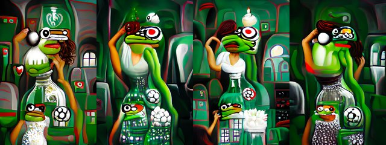

← Async Art — living works · all collections
by Hulki Okan Tabak · Async Art Master #10501 · four-phase · time rule: UTC
Updates four times a day to reflect sunrise / day / sunset / night cycles.

Sunrise 06:00–06:59 · Day 07:00–17:59 · Sunset 18:00–18:59 · Night 19:00–05:59 (UTC)
The full-size files live on IPFS; each is linked on three public gateways, in the order to try them (gateway.pinata.cloud, ipfs.io, dweb.link). Every line says what our own check found: 5 not pinned by us yet, 1 our own copy, pinned here and verified on upload.
QmUhLKWL68TZnT… gateway.pinata.cloud · ipfs.io · dweb.link — not pinned by us yet, checked 2026-09-23 09:13QmY4dfke2XhEcP… gateway.pinata.cloud · ipfs.io · dweb.link — not pinned by us yet, checked 2026-09-23 09:13QmXqr87rBY46i8… gateway.pinata.cloud · ipfs.io · dweb.link — not pinned by us yet, checked 2026-09-23 09:13Qmc2ZBRh6kTiPT… gateway.pinata.cloud · ipfs.io · dweb.link — not pinned by us yet, checked 2026-09-23 09:13bafybeiaatsue5… gateway.pinata.cloud · ipfs.io · dweb.link — our own copy, pinned here and verified on upload, checked 2026-09-22QmZwMB7DiDgCwL… gateway.pinata.cloud · ipfs.io · dweb.link — not pinned by us yet, checked 2026-09-23 09:13QmY4dfke2XhEcP… gateway.pinata.cloud · ipfs.io · dweb.link — not pinned by us yet, checked 2026-09-23 09:13QmY4dfke2XhEcP… gateway.pinata.cloud · ipfs.io · dweb.link — not pinned by us yet, checked 2026-09-23 09:13Qmc2ZBRh6kTiPT… gateway.pinata.cloud · ipfs.io · dweb.link — not pinned by us yet, checked 2026-09-23 09:13QmUhLKWL68TZnT… gateway.pinata.cloud · ipfs.io · dweb.link — not pinned by us yet, checked 2026-09-23 09:13QmXqr87rBY46i8… gateway.pinata.cloud · ipfs.io · dweb.link — not pinned by us yet, checked 2026-09-23 09:13Pepe and the Non-existent Belly Dancer by Hulki Okan Tabak 4 artworks in 1 1/1 minted on Async Art, 2022 ... HoT's Pepe series is expanding with various still images, GIF, single editions and multi editions.
async.art · OpenSea · Etherscan
Generated archive pages. Content identifiers point to the public IPFS network.